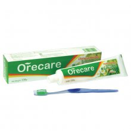
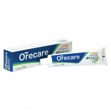
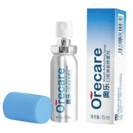
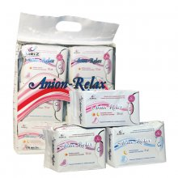

Средства личной гигиены «Тяньши»Благодаря средствам личной гигиены здоровье человека укрепляется, повышается продолжительность его активной жизни. Средства личной гигиены подразделяются на средства по уходу за полостью рта, зубами и средства женской гигиены. Здоровые зубы – важнейший показатель здоровья человека, поэтому вслед за развитием экономики и общества необходимо изменить свое представление о гигиене полостирта: уделять больше внимания здоровью зубов, регулярно проходить осмотр у стоматолога, в случае возникновения проблем своевременно лечить зубы. С помощью зубных паст и средств Orecare можно предотвратить образование инфекции в ротовой полости, избежать заболеваний десен и зубов. Чувство спокойствия, легкости, свободы дают женщине гигиенические прокладки Anion-Relax AIRIZ. Женские гигиенические прокладки с активным кислородом и отрицательно заряженными анионами моментально впитывают влагу и препятствуют протеканию, помогая чувствовать себя комфортно в течение длительного времени, дарят нежную заботу и двойную защиту. |
|

Зубная паста Orecare с экстрактами китайских целебных трав (с зубной щеткой)Преимущества продукта:
|
|

Зубная паста «Улыбка» для чувствительной эмали зубовПреимущества продукта: |
|

Освежающий спрей для полости рта OrecareПоддержание здоровья полости рта не только повышает уверенность в себе, но и снижает опасность возникновения ишемической болезни сердца, сахарного диабета и других заболеваний. Чтобы помочь вам сохранить полость рта здоровой, компания «Тяньши» представляет вашему вниманию уникальный продукт с растительной рецептурой – освежающий спрей. |
|

Женские гигиенические прокладки Anion-Relax AIRIZТехнология двойного внутреннего слоя прокладок Anion-Relax обеспечивает профилактику гинекологических заболеваний, регулирование кровообращения, повышение иммунитета. Вы находитесь под постоянной защитой. Анионовый компонент дает антибактериальный, противовоспалительный эффект, устраняет запах, снимает напряжение, улучшает состояние эндокринной системы (внутренней секреции) и обмен веществ. Вы можете быть вдвойне спокойны, находясь под двойной защитой Anion-Relax. |